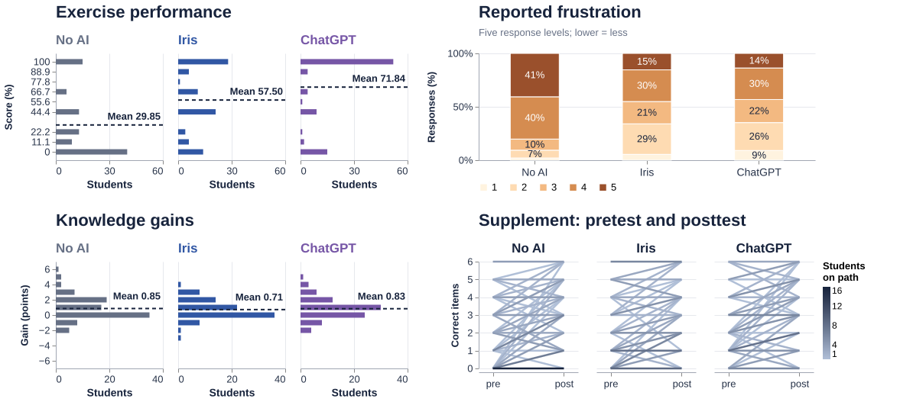
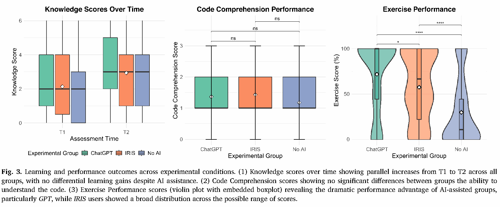
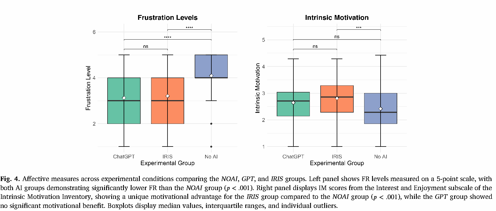

Evidence for a research finding
Exercise performance and immediate learning with AI support
Bassner et al. studied an approximately 90-minute Java concurrency exercise in an introductory programming course. Students received no AI support, the Iris tutor, or unrestricted ChatGPT. Iris and ChatGPT also differed in access to course and code context.
In this short programming exercise, students in both AI-supported conditions achieved higher exercise scores and reported less frustration than the no-AI group, but the study did not detect greater immediate conceptual knowledge gains.
This is a classroom paraphrase of the results, not a quotation. The figure below uses the authors' retained analysis sample of 275 participants from 452 raw records.
Paper · Data version

What the figure makes visible
Exercise-score means are 29.85%, 57.50% and 71.84% for No AI, Iris and ChatGPT. Three side-by-side horizontal bar charts share a vertical score axis and a horizontal 0–60 student-count scale. Bar lengths reveal concentration at each exact score; dashed horizontal lines mark group means. At 100%, the counts are 15, 28 and 52 students, respectively.
The response item is “I was frustrated during the exercise.” Levels 1–5 mean strongly disagree, disagree, neutral, agree and strongly agree. More agreement means more frustration. Numerical means, using the paper's scoring convention, are 4.09, 3.21 and 3.13. The proportions keep the ordinal response structure visible.
The lower-left view compares individual knowledge gains in three side-by-side horizontal bar charts. Knowledge gain runs from −6 to +6 on the vertical axis; horizontal bar length shows student counts on a common 0–40 scale. The mean gains are 0.85, 0.71 and 0.83 points, labeled directly above the corresponding dashed horizontal lines. Counts at zero are 35, 36 and 24 students. The paper's time-by-group interaction is p = .773. This is not an equivalence test.
The gain distributions do not retain starting scores. The lower-right supplemental paired-score view keeps both starting and ending scores. Each line groups students who share the same pretest and posttest scores; darker lines represent more students on a shared 1–16 count scale. The No AI 0-to-0 path represents 16 students, while the ChatGPT 4-to-5 path represents 5. These counts describe the observed paths, not an estimated AI effect. Supplement: pretest and posttest.
Figure caption
Classroom redesign, recalculated from Zenodo record 20285307 (CC BY 4.0). The authors' filtering rules retain 275 of 452 participants: No AI n = 96, Iris n = 91, ChatGPT n = 88. All panels use those participants.
The upper-left view shows exercise-score distributions in three side-by-side horizontal bar charts, ordered No AI, Iris and ChatGPT. Vertical position shows each exact observed test-pass percentage on a shared numeric scale from 0 to 100. Bar length encodes student count on a common horizontal 0–60 scale. Small margins beyond the score endpoints keep the full bars visible. The nine observed scores are labeled at their numeric positions, so the unobserved 33.3% score leaves a gap. Group colors match the knowledge-gain panel; dashed horizontal lines and direct labels show arithmetic means. Sample sizes are listed above.
The upper-right view shows within-group proportions for the five response categories, ordered from 1 (strongly disagree) at the bottom to 5 (strongly agree) at the top. Labels are rounded percentages. The question is “I was frustrated during the exercise.” Frustration is an ordinal response. Its numerical mean assumes the paper's 1–5 scoring convention.
The lower-left view shows knowledge-gain distributions in three side-by-side horizontal bar charts, ordered No AI, Iris and ChatGPT. Vertical position shows each integer gain from −6 to +6; horizontal bar length shows student counts on a common 0–40 scale. Small margins keep endpoint bars visible. Group colors match the exercise-score view. Dashed horizontal lines mark arithmetic means, with numerical labels just above their right ends. The same group sizes apply to every view. These are counts, not proportions. Gain values preserve each student's amount of change but do not retain starting scores. Mean confidence intervals remain in the notebook calculations and reference table.
The lower-right supplemental paired-score view shows pretest and posttest scores on a shared 0–6 scale, separately for each group. One line represents each distinct starting–ending score pair. A common linear light-to-dark scale encodes 1–16 students per path. The 92 paths account for all 275 students (No AI 96, Iris 91, ChatGPT 88). Line widths are constant and lines are opaque, so crossings do not add darkness. Distinct paths may still cross or share an endpoint. Counts are not adjusted for group size.
Core counts and descriptive means match the paper's reported precision. The original R inferential models were not rerun. Significance claims come from the paper, Tables 4–8. Supplemental gain-difference intervals in this notebook are new, unadjusted classroom estimates, not the paper's tests. This short task and immediate test do not establish equal effects or long-term learning outcomes.
Original paper figures, with original captions

Bassner et al. (2026), Figure 3, p. 13. CC BY 4.0.
Bassner et al. (2026), Figure 4, p. 14. CC BY 4.0. Paper DOI.Data, code and scope
Original CSV, author's preparation script and questionnaire. The raw CSV has 452 unique participants and 76 columns. Its MD5 is 5e77465a489bd77ab9e24a295a37144e.
The course package includes the Python translation, the original R files, the complete ordered exclusion log and all checked means. The age, gender and experience exclusions are the authors' analysis choices. Similar retained group sizes do not establish that exclusions introduced no bias.
Paper: Bassner, Lenk-Ostendorf, Beinstingel, Wasner and Krusche (2026), Computers and Education: Artificial Intelligence, 10, 100537. DOI. Figures 3 and 4 and data record 20285307: CC BY 4.0. Vega-Lite and Vega-Embed: BSD-3-Clause.
Processing record · Numerical audit · Complete figure specification · Python preprocessing